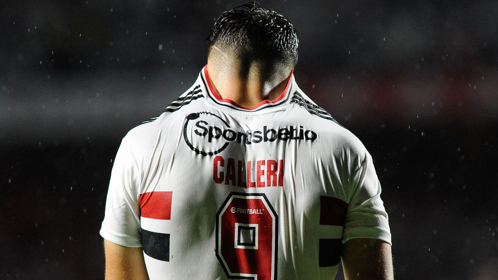

Artilheiro do São Paulo, Calleri, sofre lesão no tornozelo e está fora do Paulistão
O atacante Calleri foi diagnosticado com uma lesão no tornozelo direito que pode afastá-lo do Morumbi por pelo menos quatro semanas. O camisa 9 corre o risco de não jogar mais na competição. Ele sofreu o machucado após uma partida o contra o São Bernardo no sábado que logo em seguida colocou gelo no local. O argentino passou por um exame no domingo para diagnosticar o problema. Carelli já iniciou o tratamento e está se recuperando e tentando voltar à forma. Jogador e São Paulo podem optar por cirurgia ou tratamento convencional. O argentino não tem prazo definido para voltar aos gramados.
Uma definição de como irá funcionar a recuperação será publicada nos próximos dias, após consulta a especialistas em problemas de tornozelo. No domingo, Carelli passou por um exame que mostrou lesões no local. O menor período de afastamento foi de um mês, mas o problema diagnosticado nesta segunda-feira deve afastar o argentino do São Paulo por mais tempo.
Quem retornará primeiro?
Incluindo Calleri, a atual lista de lesionados do Tricolor está com 13 pessoas. Mas nem tudo são más notícias na página do CT da Barra Funda. Olejuela, Wellington e David começaram a transição nesta segunda-feira (27) durante as atividades para reservas e lesionados. O camisa 9 se junta a Diego Costa, Igor Vinicius e Caio Mateus que já estavam nesta fase de recuperação.